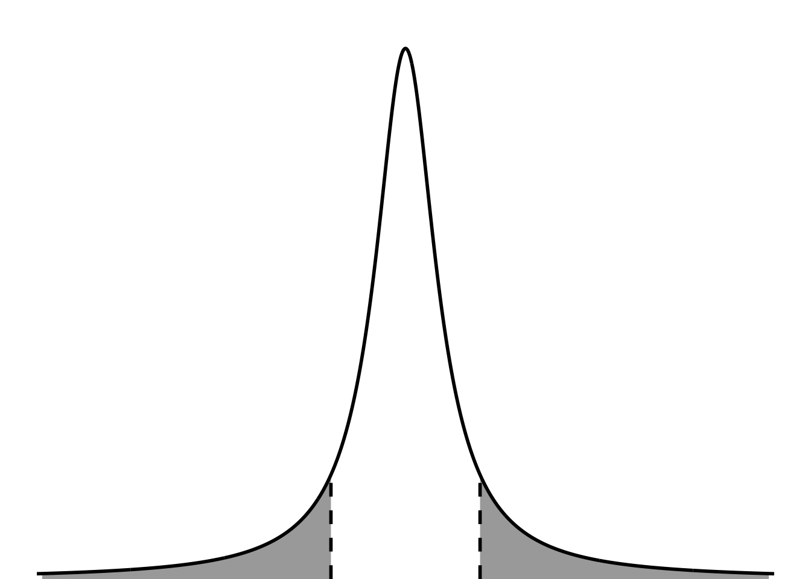
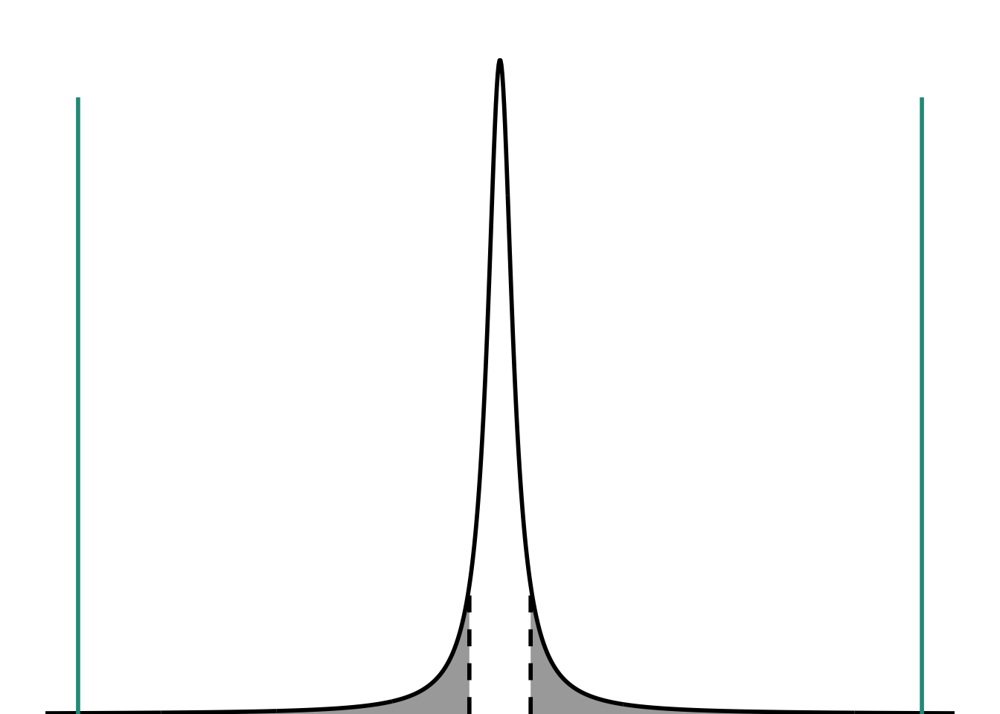

# read in the tidyverse
library(tidyverse)
# data
creosote <- c(1.61, 1.86, 1.55, 2.28, 1.90,
1.55, 1.95, 2.02, 1.97, 1.71,
2.25, 1.92, 1.61, 1.14, 2.14,
1.79, 1.80, 2.08, 2.05, 1.98,
2.08, 2.03, 1.82, 1.20, 1.99,
1.78, 1.75, 1.36, 1.66, 1.93,
2.21, 1.77, 1.92, 1.78, 1.39,
1.68, 1.68, 1.78, 2.13, 2.03)1. Description
In this optional problem, you’ll try a one-sample t-test in code. In lecture, we talked about the different values you’ll want to keep in mind: the tstatistic, the p-value, the tcritical, and the significance level (or \(\alpha\)).
2. Creosote heights

You overhear a conversation where someone makes a claim that creosote (Larrea tridentata) shrubs are 3 m tall. On your next walk through the desert, you decide to measure some shrubs (n = 40). From these 40 shrubs, you calculate the following summary statistics:
\[ \begin{align} \bar{y} &= 1.8 m \\ s &= 0.26 m \end{align} \]
Using your sample, you ask: how does my sample compare to the claim that I heard?
For this problem, use a 95% confidence level with the corresponding significance level for a two tailed test.
3. Steps
- Draw a t-distribution and label the tcritical and the significance level.
- Create a script or Quarto document to work in.
- Copy/paste the code in the Set up code chunk into your script. Run the code.
- Write your hypotheses in biological and statistical terms.
- Calculate the tstatistic using the test statistic formula for a one sample t-test.
- Calculate the tcritical using
qt(). - Calculate the p-value for your test statistic using
pt().
- Draw the tstatistic and p-value on your distribution from step 0. Take a moment to think: do you have evidence to suggest that creosote shrubs are not 3 m tall?
- Use
t.test()to verify that your calculations from steps 3-5 are correct.
- In one sentence, summarize your findings.
Set up code
3. Solution
0. draw a t-distribution and label
You should do this by hand, but this is just here for reference.
# calculating t-critical (need this for the plot)
t_critical <- qt(p = 0.05/2, df = 40 - 1, lower.tail = FALSE)
# plotting the distribution
tdist_plot <- ggplot(data.frame(x = -5:5), aes(x)) +
# first plotting the shaded areas under the curve (significance level)
# this is the area to the right
stat_function(geom = "area",
fun = dt,
args = list(df = 1),
xlim = c(t_critical, 30),
fill = "darkgrey") +
# this is the area to the left
stat_function(geom = "area",
fun = dt,
args = list(df = 1),
xlim = c(-30, -t_critical),
fill = "darkgrey") +
# then, plotting the boundaries at the critical t value: 2.022
# this is the line on the right
annotate(geom = "linerange",
x = t_critical,
ymin = 0,
ymax = 0.065,
linewidth = 1,
lty = 2,
color = "#000000") +
# this is the line on the left
annotate(geom = "linerange",
x = -t_critical,
ymin = 0,
ymax = 0.065,
linewidth = 1,
lty = 2,
color = "#000000") +
# lastly, plot the t-distribution
stat_function(geom = "line",
n = 1000,
fun = dt,
args = list(df = 1),
linewidth = 1,
color = "#000000") +
# controlling plot aesthetics
scale_x_continuous(limits = c(-10, 10)) +
scale_y_continuous(expand = c(0, 0),
limits = c(0, 0.32)) +
theme_void() +
theme(panel.grid = element_blank(),
plot.margin = unit(c(1, 0, 0, 0), "cm"))
tdist_plot
In this plot, the dashed line is the tcritical, and the shaded areas are the significance level. They are split between the two tails because this is a two tailed test (not directional).
3. Write your hypotheses in biological and statistical terms.
Biological
Creosote shrub height is different from the claim.
Statistical
H0: Mean creosote shrub height is 3 m.
HA: Mean creosote shrub height is not 3 m.
4. Calculate the t-statistic.
# claimed mean
mu <- 3
# number of observations
n <- length(creosote)
# sample mean
ybar <- mean(creosote)
# sample standard deviation
s <- sd(creosote)
# sample standard error
se <- s/sqrt(n)
# t-score
t <- (ybar-mu)/se
t[1] -27.845555. Calculate tcritical
t_critical <- qt(p = 0.05/2, df = n - 1, lower.tail = FALSE)
t_critical[1] 2.0226916. Calculate the p-value
2*pt(q = t, df = n - 1, lower = TRUE)[1] 2.390222e-277. Draw the tstatistic and p-value
tdist_plot +
# this is the line on the right
annotate(geom = "linerange",
x = t,
ymin = 0,
ymax = 0.3,
linewidth = 1,
color = "#239a89") +
# this is the line on the left
annotate(geom = "linerange",
x = -t,
ymin = 0,
ymax = 0.3,
linewidth = 1,
color = "#239a89") +
scale_x_continuous(limits = c(-30, 30))
In this plot, the teal lines represent the tstatistic. They are way way way past the tcritical. I’m not plotting the p-value here, because I know for sure that the threshold has been met for me to think, “It’s so unlikely that these creosote shrubs come from a population with a mean height of 3 m that I actually think they came from a population with a different mean height.”
8. Use t.test()
t.test(creosote, mu = 3)
One Sample t-test
data: creosote
t = -27.846, df = 39, p-value < 2.2e-16
alternative hypothesis: true mean is not equal to 3
95 percent confidence interval:
1.743134 1.913366
sample estimates:
mean of x
1.82825 9. Report your findings
We tested the hypothesis that creosote height was different from the claim of 3 m. We measured the height of 40 creosote shrubs and found a significant difference between our sample and the claim (two-tailed one sample t-test, t(39) = -27.8, p < 0.001, \(\alpha\) = 0.05).
Reporting your findings
For most tests, the information in the parentheses would be:
(test, distribution(degrees of freedom) = test statistic, p-value, \(\alpha\)).
This changes slightly based on the test, but this is the general form.